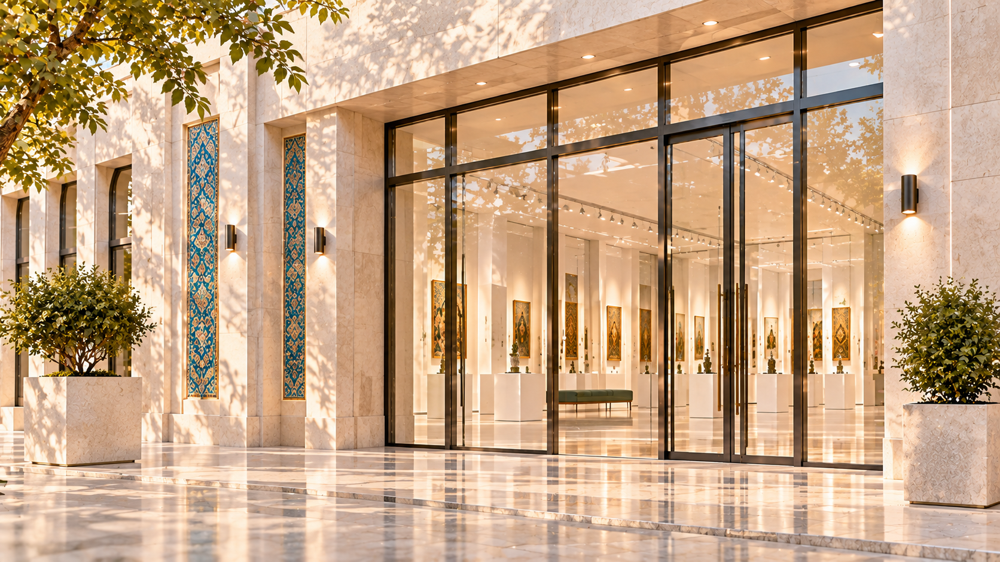
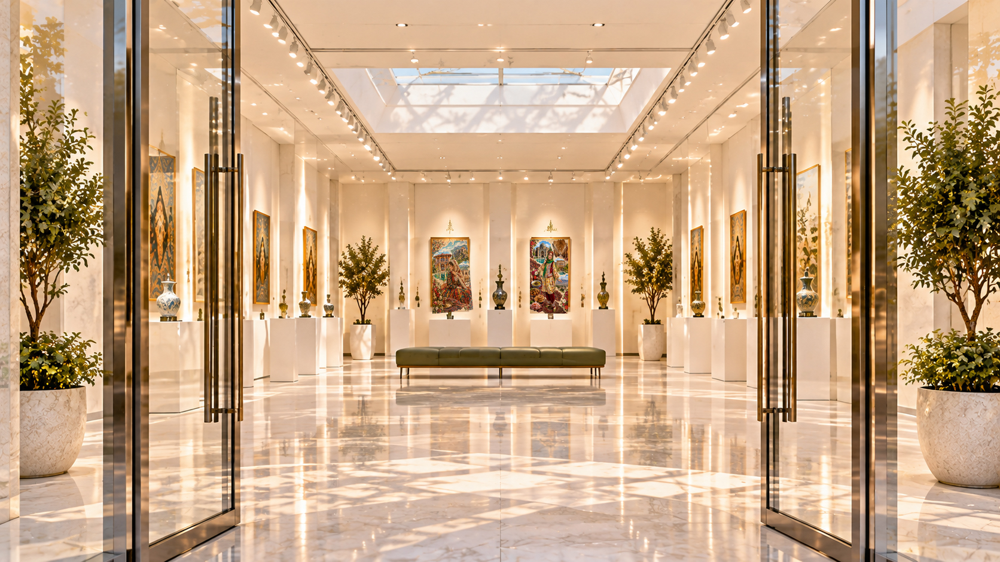
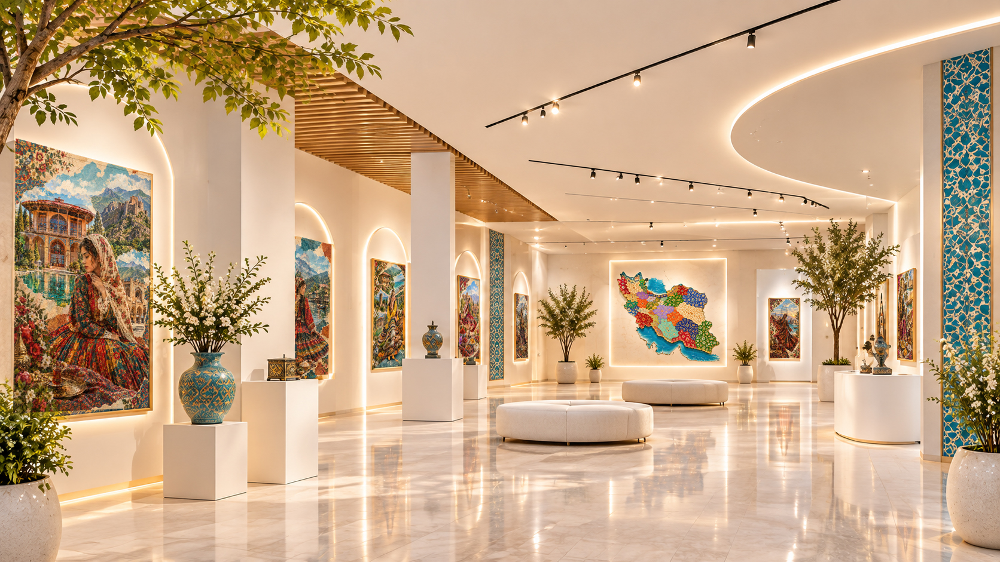

به ایران، هزار رنگ خوش آمدید
برای آغاز سفر، به پایین بروید ↓

از اینجا، سفر رنگها آغاز میشود.

هر گوشه از این سرزمین، روایتی دارد
روایتی از زنان، پوششها و فرهنگها؛ از دل تاریخ تا زندگی امروز.
سفر خود را چگونه آغاز میکنید؟
راه خود را انتخاب کنید و به کشف رنگهای ایران بروید.
راهنمای سفر
مقصد خود را روی نقشه ایران انتخاب کنید.

انتخاب شهرها و نشانگرهای تعاملی در مرحله بعد اضافه میشوند.
پیادهروی در گالری
در این مسیر، تابلوها را یکییکی و به ترتیب مسیر نمایشگاه تماشا خواهید کرد. بازدید هدایتشده از قزوین آغاز میشود.
بخش حرکت دوربین و نمایش تابلوهای شهرها در مرحله بعد تکمیل میشود.
آشنایی با قزوین